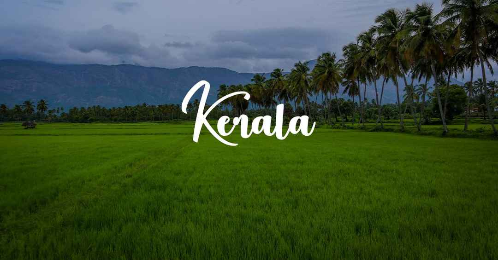
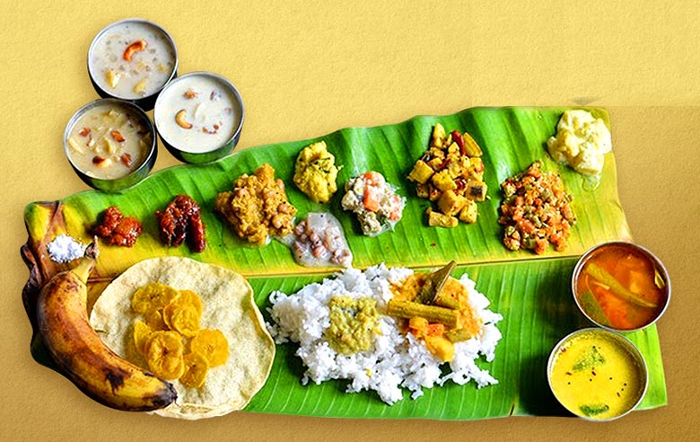

Kerala, a state on India's tropical Malabar Coast, has nearly 600km of Arabian Sea shoreline.It's known for its palm-lined beaches and backwaters, a network of canals. Inland are the Western Ghats,
mountains whose slopes support tea, coffee and spice plantations as well as wildlife. National parks like Eravikulam and Periyar are home to elephants, langur monkeys and tigers.
* Governer:Arif Mohammad Khan
* Capital: Thiruvananthapuram
* Founded: 1 November 1956
* Chief minister: Pinarayi Vijayan
* Population: 3.46 crores (2018)